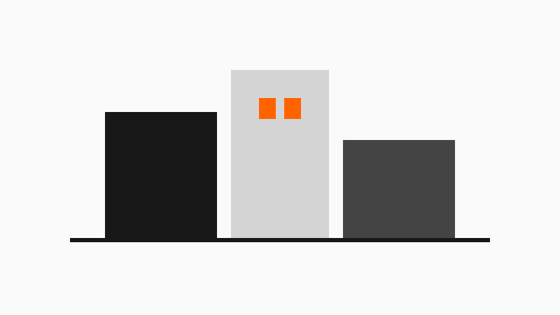
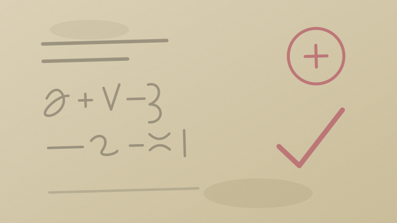
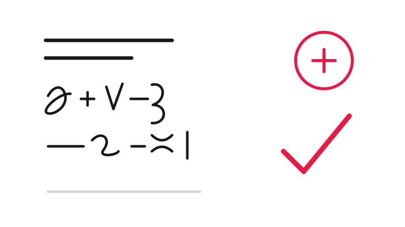

2. Formulas
Start every formula with an equals sign. =SUM(B2:B9) adds the fees in B2 to B9, and =AVERAGE(C2:C9) gives the batch's average mark.
Drag the line on the left to give this lesson more room.
Tools
Settings pages, editors, print set-ups, colour and maths: panels of rows, a split view, a menu bar, readouts, a colour picker and a maths keypad. They live in an optional pair of files, so pages that do not use them stay light.
Start here
Every part a full tool kit needs, and where each one lives in Xsenze. New parts are in the tools pack on this page. In the kit parts were already in the main files; follow the link to their page. A few parts are left out, with the reason and what to use instead.
| Part | What it does | In Xsenze | Status |
|---|---|---|---|
| Row | A label at the start, a control or value at the end | xz-panel__row | New |
| Rows | Rows stacked with hairlines between them | xz-panel | New |
| Panel heading | A small label row that names a group | xz-panel__label | New |
| Jump heading | A title bar with a link onward | xz-panel__head and __tools | New |
| Stage | A large area for a preview or a readout | xz-panel__stage | New |
| Empty row | "Nothing here" inside a panel | xz-panel__empty | New |
| Action grid | Full-width buttons in cells, and icon actions in a row | xz-panel__actions | New |
| Level bar | A thin bar for a level inside a row | meter.xz-meter | New |
| Split | Two panes with a handle to resize them | data-xz-split | New |
| Page | Plain, scrolling and centred page layouts | xz-shell, xz-container | In the kit |
| Rule | A divider with words on it | xz-divider--label | In the kit |
| Part | What it does | In Xsenze | Status |
|---|---|---|---|
| Option cells | A full-width single choice, the chosen cell filled | xz-segmented--cells | New |
| Fader | A slider drawn as a filled bar with its value | xz-slider--fader | New |
| Number field | A number with its unit and − and + buttons | xz-numfield | New |
| Decimal field | The same with a decimal step | xz-numfield with step="0.5" | New |
| Big number field | A large number between the buttons | xz-numfield--big | New |
| Figure | A large read-only number that follows a control | xz-readings, output.xz-panel__value | New |
| Status | A short state with a dot: Allowed, Blocked, Stopped | xz-status | New |
| Text cell and menu cell | A text box or a select at the end of a row | xz-panel__row with xz-input or xz-select | New |
| From and to | Two choices with an arrow between them | xz-panel__cells with two selects | New |
| File cell | A compact "None / Choose" file picker | xz-filefield | New |
| Dual list | Pick items into a second list and order them | data-xz-duallist | New |
| Pixel loader | Nine cells that light up in a pattern | xz-loader | New |
| Button | Actions | xz-btn | In the kit |
| Switch | On and off | xz-toggle | In the kit |
| Segmented | A compact single choice | xz-segmented | In the kit |
| Slider | A level on a track | xz-slider | In the kit |
| Stepper | A number with buttons | data-xz-stepper | In the kit |
| Text area | Long text | xz-textarea | In the kit |
| Drop zone | Drop or choose files | data-xz-dropzone | In the kit |
| Part | What it does | In Xsenze | Status |
|---|---|---|---|
| Code block | Code with its language and a copy button | xz-codeblock | New |
| Text input | A text box with paste, clear and a live count | xz-textbox, data-xz-paste, data-xz-clear, data-xz-count | New |
| Text output | A result with copy and share | xz-textbox__output, data-xz-share | New |
| Glyph tiles | Each letter on its own tile | data-xz-glyphs | New |
| Part | What it does | In Xsenze | Status |
|---|---|---|---|
| Colour well | A swatch that opens the system picker, with its value | data-xz-color | New |
| Notation input | Takes any CSS colour; eyedropper where the browser has one | data-xz-color | New |
| Colour controls | A model (RGB, HSL, OKLCH) and a fader per channel | data-xz-colorpicker | New |
| Colour card | One colour with every notation to copy | data-xz-colorpicker value lines | New |
| Value line | A label, a value and a copy button | xz-valueline | New |
| Swatch and colour strip | Colours side by side, each one copies | xz-swatches | New |
| Palette card | Shades from light to dark, with a hue fader | data-xz-shades | New |
| Contrast check | The WCAG ratio and the levels it passes | data-xz-contrast | New |
| Colour solid | A 3D colour cube to turn | The colour picker faders | Left out: a 3D drawing is heavy and hard to use with keys |
| Detent wheel | A spinning wheel to pick an option | Option cells | Left out: cells show every choice at once and work with keys |
| Detent wheel row | Several wheels side by side | Option cells | Left out: same reason |
| Loupe | A magnifier to pick a pixel | The eyedropper in the colour field | Left out: the browser's eyedropper does this job |
| Part | What it does | In Xsenze | Status |
|---|---|---|---|
| Maths view | Typed maths shown as real notation | data-xz-math | New |
| Maths field | A text box with the notation drawn as you type | data-xz-mathfield | New |
| Maths input | The field with a button that opens the keypad | data-xz-mathpad-toggle | New |
| Maths editor | Field, preview and keypad together | xz-mathfield | New |
| Maths keypad | Keys that type into the field | data-xz-mathpad | New |
| Maths tabs | Key sets: numbers, functions, sums, letters | xz-mathpad__tabs | New |
| Maths key | One key | xz-mathpad__key | New |
| Maths rail | Move, delete, clear and done | The keypad's last row | New |
| Part | What it does | In Xsenze | Status |
|---|---|---|---|
| Timecode | Numbers drawn as lit segments | data-xz-readout, data-xz-timer | New |
| Readout band | A readout over a picture | xz-readout on an xz-stage | New |
| Lamps | Lights for live states | xz-lamps | New |
| Tiles | Small labelled measurements | xz-readings | New |
| Compression scale | A before and after amount with the change | xz-delta | New |
| Dimension line | Width and height lines around a box | xz-measure | New |
| Page strip | Page thumbnails to pick from | xz-pagestrip | New |
| Preview panel | A preview area with its name and size | xz-stage | New |
| Image compare | Two pictures with a line to drag | data-xz-beforeafter | New |
| Icon | Line icons | data-xz-icon | In the kit |
| Toast | A short message after an action | Xsenze.toast() | In the kit |
| Part | What it does | In Xsenze | Status |
|---|---|---|---|
| Menu bar | File, Edit and View menus | data-xz-menubar | New |
| Menu with ticks and submenus | Tick items, dot items, submenus and key labels | menuitemcheckbox, menuitemradio | New |
| Sidebar rail | The sidebar as a column of icons | xz-sidebar--rail | New |
| Sidebar row | A row with a coloured edge for a live state | data-tone | New |
| Window | An app frame with a menu bar and a sidebar | Certificate maker template | New |
| Command | Search and run anything | Command palette | In the kit |
| Jump grid | A grid of places to jump to | Command palette with groups | In the kit |
| Dialog | A modal question | xz-modal | In the kit |
| Sheet | A panel from the side or the bottom | xz-drawer, xz-sheet | In the kit |
| Context menu | A right-click menu | data-xz-context-menu | In the kit |
| Menu | A dropdown of actions | data-xz-menu | In the kit |
| Popover | A small panel by a button | data-xz-popover | In the kit |
| Tooltip | A name for an icon button | data-xz-tooltip | In the kit |
Patterns are parts working together. Each one below is a demo on this page or a template.
| Pattern | Built from | Where |
|---|---|---|
| Settings screen | Panel, option cells, fader, switches, number field, meter, status | Settings template |
| Print set-up and export job | Menu bar, split view, paper size, colour fields, contrast check, page strip, readings | Certificate maker template |
| Paper | Option cells, measure lines, outputs | Paper size |
| Equation | Maths field, keypad, maths view | Maths field and keypad |
| Contrast | Two colour fields, ratio, pass marks | Contrast check |
| Palette | Shades and a hue fader | Shades |
| Swatch | Colour field, swatches, value lines | Colour picker |
| Timecode | Readout, timer buttons | Timer |
| Lamps | Lamps and switches | Lamps |
| Columns | Dual list | Dual list |
| Compare | Before and after, option cells | Before and after |
| Glyphs and text tool | Text box, option cells, output, letter tiles | Text box |
| Loaders | Pixel loaders and their options | Pixel loaders |
| Drop slot | Drop zone, file field | Upload, File field |
| Unit converter | Number field and readings | Readings |
| Colour cube, shape halves | 3D and decorative drawings | Left out: decoration without a job in school and business screens |
| Tone player and media editor | Sound waves and audio editing | Left out: the kit's player covers audio; an editor needs sound code outside a UI kit |
The tools pack is one stylesheet and one script. Load them after the kit's own files, on the pages that use them. Everything else on this page needs them.
data-xz-* attributes and starts them on page load.Xsenze.init(element).xz:* events, or call the methods on its element, such as element.xzSplit.set(40). Each section below lists them.| File | Size, gzipped | Holds |
|---|---|---|
xsenze-tools.min.css | 9 KB | Every style on this page |
xsenze-tools.min.js | 19 KB | Split view, menu bar, dual list, readouts and timer, paper, before and after, colour, maths and text tools. Most of it is the colour maths and the maths reader. |
The script adds Xsenze.tools: Xsenze.tools.color (read, convert and compare colours), Xsenze.tools.math.toMathML(text) and Xsenze.tools.letters(text), which splits text into letters the way people read them.
The pack adds no colours, fonts or corners of its own. Every part draws on the kit's tokens, so a theme made on the Create page changes the tools too.
| Style | Tokens |
|---|---|
| Hairlines between rows and cells | --xz-border, drawn as 1px gaps |
| Panels, title bars and stages | --xz-surface, --xz-surface-2, --xz-surface-3 |
| The chosen cell and the main action | --xz-accent with --xz-on-accent |
| Highlights: fader handle, open menu, chosen page, dual list choice | --xz-accent-2, --xz-accent-2-soft |
| Corners | --xz-radius-surface, --xz-radius-control |
| Numbers, values and code | --xz-font-mono with tabular figures |
| Titles, labels and big numbers | --xz-font-display, --xz-letter-spacing-label |
| States | --xz-success, --xz-warning, --xz-danger, --xz-info and their -text and -soft forms |
| Focus | --xz-focus, drawn inside cells so it is never cut off |
| Motion | --xz-duration-*, --xz-ease-out; still with less motion or the page's motion button off |
| Touch | Rows and keys grow to --xz-control-touch (44px) on touch screens |
Set these on a part, or on a parent, to change one instance.
| Custom property | Part | Default |
|---|---|---|
--xz-panel-row, --xz-panel-pad | Panel row height and side space | 3rem, 1rem (xz-panel--compact: 2.5rem, 0.75rem) |
--xz-cols | Cells per line in xz-panel__cells | 2 |
--xz-split | Size of the first pane in a split view | 50% |
--xz-fader-track | The fader's track, such as a colour ramp | Filled to the value |
--xz-numfield-width | Width of the number in a number field | 4ch |
--xz-readout-size | Height of a readout's digits | 2.5rem |
--xz-loader-cell, --xz-loader-step | Pixel loader cell size and speed | 0.375rem, 120ms |
--xz-level | Bar under a reading | none |
--xz-value | Width of a change bar | 100% |
--xz-ratio | Shape of a measure box, page or stage, such as 210 / 297 | auto, A4 for pages |
--xz-page-width | Page strip thumbnail width | 5.5rem |
--xz-swatch, --xz-swatch-height | A swatch's colour and height | none, 3.5rem |
--xz-paper-stage | Height of the paper stage. The page is fitted inside it, so the stage never changes size | 21rem |
--xz-paper-scale | Share of the stage the page fills, for a zoom control (0.1 to 1) | 1 |
--xz-duallist-height | Height of each list in a dual list. Long lists scroll inside it | 13.75rem |
--xz-mathpad-cols | Keys per line on the maths keypad | 6 |
A box of rows with hairlines between them, for settings, side inspectors and tool screens. Each row puts a label at the start and its control or value at the end, so a long list of settings still scans in one line of sight. It is CSS only.
Any child after the first gets a hairline above it. Put rows side by side in xz-panel__cells; on phones they stack.
Part of the choices family: every choice control side by side.
A single choice that fills the width, the chosen cell solid. Use it for two to five short options; past that, use a select.
Part of the sliders family: every slider side by side.
A slider drawn as a filled bar, for levels people judge by eye. The kit's slider script keeps the fill and the linked output up to date.
Part of the number inputs family: every number input side by side.
The kit's stepper with the unit beside the number. The --big form puts one large number between the buttons, for the main setting on a screen.
Questions in the test
Part of the status family: every status mark side by side.
A status says a state in one or two words, with a dot for a quick scan; the words carry the meaning, so it reads the same without colour. A value line shows something people copy, such as a code or a link.
Permissions for the test
B-14-2026xsenze.fees@upihttps://meet.example.com/b14-pivot-tablesPart of the upload family: every way to add a file.
A compact file picker for one setting, such as a logo or a signature. Until the script runs, the browser's own file input shows; after, the row shows the file's name.
Actions fill the panel's last row; give the main one --primary. A stage holds a preview or a readout. An empty row says what will appear, and how.
No one is waiting for Batch B-15 yet.
Learners join from the list when a seat opens.

| Class | What it does |
|---|---|
xz-panel | The box. --compact for shorter rows, --flat for no corners or side borders, such as a full-height side panel. |
xz-panel__head, __title, __tools | The title bar: an icon, the title (a heading) and small buttons or a link at the end. |
xz-panel__label | A small heading row for a group of rows. |
xz-panel__row | A label at the start and a control at the end. A label element works as a row; add xz-toggle to make the whole row a switch. |
xz-panel__key, __hint, __value | A row's name, a line of help under it, and a value in mono at the end (an output for values that change). |
xz-panel__cells | Rows side by side, two to a line; set --xz-cols for more. They stack under 480px unless you add xz-panel__cells--keep. |
xz-panel__stage | A large area for a preview. --plain keeps the panel's colour. |
xz-panel__actions, __action | A strip of full-width buttons. --primary for the main one, --danger for a risky one; aria-pressed for a toggle. |
xz-panel__empty, __foot | An empty state inside the panel, and a small note at the bottom. |
xz-segmented--cells | Option cells: the kit's segmented control as full-width cells. |
xz-slider--fader | Fader: add to an xz-slider. Set --xz-fader-track to draw your own track. |
xz-numfield, --big | Number field: on an xz-stepper with data-xz-stepper. Inside: __box holding __input and __unit. Point the input's aria-describedby at the unit. |
xz-status | --success, --warning, --danger, --info, or --off for a hollow dot. |
xz-valueline, xz-valuelines | __label, __value and a copy button with data-xz-copy. --stack puts a long value under its label. xz-valuelines frames a list of them. |
xz-filefield + data-xz-filefield | A label with __label, __name, __btn and a file input. Shows the chosen file's name, or "3 files". |
Two panes with a handle between them: a list and its detail, a question and its answer, a form and its preview. Drag the handle, or focus it and use the arrow keys; Shift moves further, Home and End go to the limits, and Enter folds the first pane away and back. A name remembers the size on this device. On phones the panes stack.
Start every formula with an equals sign. =SUM(B2:B9) adds the fees in B2 to B9, and =AVERAGE(C2:C9) gives the batch's average mark.
Drag the line on the left to give this lesson more room.
Add xz-split--rows to put the panes one above the other.
Question 4. A batch of 40 learners pays ₹12,500 each. How much is collected? Show your working.
| Class or attribute | What it does |
|---|---|
xz-split + data-xz-split="name" | Around two xz-split__pane elements. The script adds the handle between them. The name remembers the size; leave it empty to start fresh each time. |
--xz-split | The first pane's starting size, such as 34%. |
data-xz-min, data-xz-max | The limits, in per cent. 15 and 85 unless set. |
data-xz-label | The handle's name for screen readers, such as "Resize the lesson list". |
xz-split--rows | Panes one above the other. |
xz-split--keep | Keeps two panes side by side on phones too. |
xz:resize | Fires as the size changes, with event.detail.size and collapsed. |
element.xzSplit | set(40), get(), collapse(), restore() and toggle(). |
Pick items into a second list and put them in order: the columns a table shows, the learners in a batch, the subjects on a report card. The markup is a set of checkboxes, so the form sends the choice even without the script. With it, click to select, Shift and Ctrl to select more, double-click or Enter to move, and Alt with Up or Down to reorder. Both lists keep one height and scroll inside it, so moving items never moves the page.
| Class or attribute | What it does |
|---|---|
xz-duallist + data-xz-duallist | On a fieldset with a legend and one label per item, each holding a checkbox. Ticked boxes start in the second list. A small adds a note at the end of the item. |
data-xz-labels="Hidden|Shown" | The two lists' names. "Available" and "Chosen" unless set. |
data-xz-buttons="Show|Hide|Up|Down" | The four buttons' words. "Add", "Remove", "Up" and "Down" unless set. |
data-xz-empty | What an empty list says. "Nothing here" unless set. |
| The form value | The ticked checkboxes, sent in the chosen order. |
xz:change | Fires when the choice or order changes, with event.detail.value: the chosen values in order. Each checkbox also fires change. |
element.xzDuallist | value() and set(['learner', 'amount']). |
The sidebar as a column of icons, for tool screens that need the room. Each link keeps its words for screen readers; a tooltip shows them to everyone else. data-tone gives a row a coloured edge for a live state.
Part of the navigation family: every way to move around.
| Class or attribute | What it does |
|---|---|
xz-sidebar--rail | On the kit's xz-sidebar. The words stay in each link, hidden from sight; add data-xz-tooltip with the same words. Section headings become thin lines. |
data-tone | On an xz-sidebar__link: success, danger, warning or accent. Say the state in the link's words too, such as "Live class, on air". |
Readouts and loaders
Numbers and states that people read at a glance: a countdown, live class lights, a week's figures, a file before and after compression.
Part of the numbers family: every way to show a number.
Numbers drawn as lit segments, like a clock. Screen readers, and the page without the script, get the text itself. It shows digits, the colon, the point, the minus sign and spaces.
The quiz has a countdown of its own, kept across reloads: see Quiz.
A countdown for an activity or a test, or a stopwatch. It warns once when time is short and says "Time is up" at the end; it does not read out every second.
Part of the status family: every status mark side by side.
Lights for live states. Each lamp also says its state in words, here hidden for screen readers, so colour and glow are never the only signal.
Part of the numbers family: every way to show a number.
Small labelled figures in a grid. A bar along the bottom shows a level when you set --xz-level.
Part of the numbers family: every way to show a number.
An amount before and after, with the change in large type. Set each bar's length with --xz-value.
−66%
Part of the numbers family: every way to show a number.
The browser's own meter, coloured by its low, high and optimum values: green when the value is good, amber when it is getting worse, red when it is bad.
| Class or attribute | What it does |
|---|---|
xz-readout + data-xz-readout | Draws its text as segments. --sm, --lg or --xz-readout-size for the size; --accent, --success, --danger for the colour. Change it with element.xzReadout.set('12:00'). |
xz-timer + data-xz-timer="300" | Counts down from 300 seconds. 0 makes a stopwatch. Inside: an xz-readout, a data-xz-timer-start button (Start, Pause, Resume) and a data-xz-timer-reset button. |
data-xz-warn="60" | Turns the readout red and says "1 minute left" once, 60 seconds from the end. |
data-xz-tenths, data-xz-autostart | Shows hundredths of a second; starts on page load. |
data-xz-labels="Start|Pause|Resume", data-xz-done | The button's words, and what is said at the end ("Time is up"). |
xz:timer, xz:timeup | Fire on start, pause and reset (event.detail.state), and when a countdown ends. |
element.xzTimer | start(), pause(), reset() and seconds(). |
xz-lamps, xz-lamp | A list of lamps: an icon and a name. is-on lights one; --success, --danger, --warning, --accent colour it; is-blinking blinks it (never with less motion); --row puts the name beside the icon. |
xz-readings, __item | On a dl, with a div per reading holding dt and dd. --xz-level draws the bar; --success, --warning and --danger colour it. |
xz-delta | __change (--down green, --up red), then __bar and __bar--after with --xz-value. |
meter.xz-meter | Name it with aria-labelledby. --neutral uses the accent colour for a plain level. |
Nine cells that light up in a pattern while something loads, for tool screens where a spinner feels out of place. It is CSS only. With less motion, or the page's motion button off, the cells hold a still pattern. Give it role="status" and say what is loading in aria-label.
Part of the loaders family: every loader side by side.
| Class | What it does |
|---|---|
xz-loader | Around nine empty i elements. Snake is the pattern unless another is set. |
--comet, --dot, --twin, --pulse | The other patterns. |
--lg, --accent, --reverse | Bigger cells, the brand colour, and the ring the other way round. |
--xz-loader-cell, --xz-loader-step | Cell size and the time per step. |
Print and pictures
For print set-ups and previews: certificates, report cards, ID cards and slides.
Width and height lines around a box. Set the box's shape with --xz-ratio.
Size and orientation choices that reshape the preview and fill in the sizes. It knows A3, A4, A5, Letter, Legal and ID card; give any other choice data-mm="100x150". The stage keeps one size: the page is fitted inside it and changes shape smoothly, so nothing around it moves.
On screen: 794 × 1123 px at 96 dpi
Thumbnails of pages to pick from. It is built on radio buttons, so it needs no script and the arrow keys move along it.
A preview area with a bar for its name and size. --checker shows the transparent parts of a picture.
| Class or attribute | What it does |
|---|---|
xz-measure | A figure with __x (the width label), __y (a span inside holds the height label) and __box. --fit centres it at --xz-measure-width. |
data-xz-paper | Around radio buttons for the size (value A4, or data-mm="100x150") and the orientation (portrait, landscape), and an xz-measure to reshape. |
data-xz-paper-out | width, height (in mm), pixels (at 96 dpi) or name: filled in as the choice changes. |
xz:paper | Fires on a change, with size, orientation, mm and px. |
xz-paper__stage | Holds the xz-measure. It keeps its height (--xz-paper-stage) and the script fits the page inside it. Set --xz-paper-scale on it to draw the page smaller, as a zoom. |
element.xzPaper | fit() fits the page again after you change the stage's size or --xz-paper-scale; update() reads the choices again. |
xz-pagestrip | A fieldset with a legend (read by screen readers only) and a label.xz-pagestrip__page per page holding a radio, __sheet, __num and __caption. __sheet--stack shows several pages. |
xz-stage | __bar with the name and __size, then __view (--checker, --fill) shaped by --xz-ratio. |
Two pictures in one frame with a line between them: a scan before and after clean-up, a photo before and after a filter, a design before and after feedback. Drag anywhere on the picture, or focus it and use the arrow keys, Home and End. Without the script the two pictures sit side by side.
Compares two pictures. To compare options, such as plans or prices, use Compare in Blocks.


| Class or attribute | What it does |
|---|---|
xz-beforeafter + data-xz-beforeafter | On a figure with two pictures (img, picture, video or svg) of the same shape, and an optional figcaption. Give it an aria-label. |
data-xz-before, data-xz-after | The two tags. "Before" and "After" unless set. |
data-xz-start="30" | Where the line starts, in per cent. 50 unless set. |
xz:compare | Fires as the line moves, with event.detail.position. |
element.xzBeforeafter | set(30) and get(). |
Colour, maths and text
For brand colours, themes and anything people colour in: a field that takes any colour, swatches, shades worked out from one colour, a contrast check and a full picker. The maths runs in OKLCH, so shades step evenly to the eye.
Part of the inputs family: every input side by side.
A swatch that opens the system picker, a box that takes any CSS colour (hex, rgb(), hsl(), oklch() or a name) and, in browsers that have one, an eyedropper. Set the value it writes with data-xz-color="oklch".
Colours side by side; each one copies its value. The script picks black or white text for each, whichever reads better.
Eleven steps from 50 to 950 worked out from one colour, with the colour itself marked at its step. This one follows the brand colour field above; the hue fader turns the whole set.
Text on a background, the WCAG contrast ratio, and the levels it passes. Body text needs AA (4.5 to 1); large text and parts of the interface need 3 to 1. White on this orange passes for large text only.
4.02 : 1
A model (RGB, HSL or OKLCH), a fader for each channel with its number, and every notation to copy. The swatch at the top opens the system picker. The form sends the colour as hex, from the colour input's name.
| Class or attribute | What it does |
|---|---|
data-xz-color | Colour field: around a colour input and a text input. The value (hex, rgb, hsl, oklch) sets the notation it writes; hex unless set. |
xz:color | Fires from colour fields and pickers, with hex, rgb, hsl, oklch and color (the channels). |
element.xzColor | get() and set('#2563eb'). |
xz-swatches, xz-swatch | A list of buttons, each with --xz-swatch and data-xz-copy. __name for a name; is-base marks one; xz-swatches--tall stands the words on end. |
data-xz-shades="#ff6300" | Draws eleven shades. data-xz-shades-for="#field" follows a colour field; a range input with data-xz-shades-hue inside turns the hue. Fires xz:shades; element.xzShades.set(colour). |
data-xz-contrast | Around two colour fields, text first, then background. Fills __ratio strong, colours __sample, and marks each [data-level] as passing or failing in words too. Fires xz:contrast with ratio and pass. |
data-xz-colorpicker | Around a colour input. data-xz-model picks the first model; OKLCH unless set. element.xzColorpicker has get() and set(). |
Xsenze.tools.color | parse(), toHex(), toOklch(), fromOklch(), toHsl(), contrast(a, b), readable(c), shades(c) and formats. |
Maths typed as plain text, such as sqrt(x^2+1)/(2x), shown as real notation. It uses MathML, which every current browser draws and screen readers can speak. Without the script, the text stays as typed and still reads correctly.
The area of a circle is pi r^2, and its roots are
x = (-b ± sqrt(b^2 - 4ac))/(2a)
| Type | Shows as |
|---|---|
(x+1)/(x-1) | (x+1)/(x-1) |
x^2 + 2x + 1 | x^2 + 2x + 1 |
root(3, 27) = 3 | root(3, 27) = 3 |
x_1 + x_2 | x_1 + x_2 |
|x - 3| <= 2 | |x - 3| <= 2 |
log_2(8) = 3 | log_2(8) = 3 |
sum(k=1, n, k) = (n(n+1))/2 | sum(k=1, n, k) = (n(n+1))/2 |
int(0, 1, x^2, x) = 1/3 | int(0, 1, x^2, x) = 1/3 |
lim(x->0, sin(x)/x) = 1 | lim(x->0, sin(x)/x) = 1 |
diff(x^3, x) = 3x^2 | diff(x^3, x) = 3x^2 |
ncr(5, 2) = 10 | ncr(5, 2) = 10 |
theta = 45°, 5! = 120 | theta = 45°, 5! = 120 |
Part of the inputs family: every input side by side.
An answer box that draws the notation as you type, and a keypad for phones and for anyone who does not know the typed forms. Keys type at the caret; a selection goes inside the brackets of a key such as √. While the keypad is open, phones keep their own keyboard away.
| Attribute or class | What it does |
|---|---|
data-xz-math | Draws the element's text as maths. xz-math--block centres it on its own line. Text it cannot read stays as typed, with the reason as a tooltip. |
| What it reads | + - * / ^ = < > <= >= != ± ! % and °; brackets; x_1; |x|; sqrt, cbrt, root(n, x), abs; sin, cos, tan and their inverses (asin), ln, log, log_2; sum, prod, int, lim, diff, ncr, npr; pi, theta and other Greek names; inf. 2x means 2 times x. |
data-xz-mathfield | Around xz-mathfield__box with __preview (an output; data-empty is shown while it is empty), __bar, __input and a data-xz-mathpad-toggle button. element.xzMathfield has value() and set(). |
data-xz-mathpad="input-id" | The keypad for that input: four key sets in tabs, then move, delete, clear and Done. Add hidden to start it closed. Done fires xz:done with event.detail.value. |
Xsenze.tools.math | toMathML(text, { block }) returns MathML; parse(text) returns the tree, or throws with a short reason. |
Code for lessons, a text box with the buttons people reach for, and letter tiles.
Code with its language and a copy button. --lines numbers the lines; is-marked picks one out.
marks = [72, 85, 64, 91]
average = sum(marks) / len(marks)
print(f"Average: {average:.1f}")SELECT batch, SUM(amount) AS collectedFROM feesWHERE paid_on >= '2026-11-01'GROUP BY batch;Part of the inputs family: every input side by side.
A text area with paste, clear and a live count of characters and words, and a result with copy and share. Paste asks the browser for the clipboard; where it says no, a message explains Ctrl+V. Share shows only where the device can share. Pick a case below to see the result change.
Batch b-14 starts on monday at 6:30 pm.
Each letter on its own tile, for spelling practice, codes and font samples. Hindi, Tamil and other scripts split into whole letters, so स्ते stays one tile.
| Class or attribute | What it does |
|---|---|
xz-codeblock | A figure with __bar (__lang and a copy button with data-xz-copy-target) and pre.xz-codeblock__pre (give it tabindex="0" so long lines scroll with the keys). --lines with a span.xz-codeblock__line per line numbers them. |
xz-textbox | A frame for a text area (or __output) and __bar. |
data-xz-paste="#id", data-xz-clear="#id" | Buttons that paste into, or empty, that text box. Inside an xz-textbox they find their own box. Both fire input and change on it. |
data-xz-count="#id" | Counts letters (as people read them) and words in that box. data-xz-max or the box's maxlength adds "of 500" and turns red past it. |
data-xz-share="#id" | Shares that element's text with the device's share sheet. data-xz-share-title, data-xz-share-url. Hidden where sharing is not there. |
data-xz-glyphs | Tiles for its own text, or data-xz-glyphs="#input" to follow a box. --lg for big tiles; data-xz-max limits the count (40). Fires xz:glyphs. |
Screens
Whole pages built from these parts, in the templates folder.
Institute settings: appearance, formats, notifications, storage and a danger zone, as panels of rows with a save bar.
A tool screen: a menu bar, a split view with the set-up panels and a live preview, paper and colour choices with a contrast check, a page strip and an export panel.